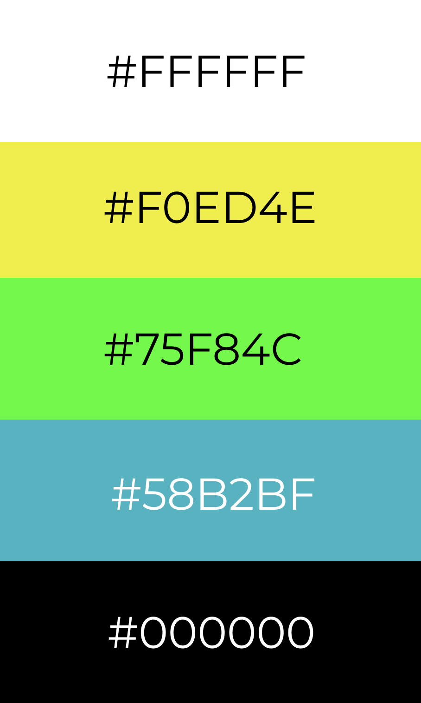

Written by Akezhan Rakishev Final draft of my Infographic
Figure 1. The infographic
Open the infographic (Links to sources in the infographic would be available)The creation of infographic requires proper analysis of the design to make it attractive and informative. In order to achieve these goals, I followed the rules and conventions written in Universal Principles of Design. There are some important
principles that I applied while creating the infographic: color, alignment and comparison. Besides the design techniques, I also used the knowledge from previous
readings on form, iconology and semiotics to effectively convey the message of the infographic to the readers.
Furthermore, I was able to improve the aesthetics and fix several issues of my infographic thanks to peer review conducted by the groupmate Maral Baizhumanova.
The infographic has different layouts for each section. The "Specifications" section includes the columns to provide the readers with comprehensive and sequential comparisons between Intel Core and AMD Ryzen CPUs. Next, the "Terms" section
follows to clarify professional terminology used in the previous part. By highlighting the terms with source links and providing definitions, the infographic is accessible to the wider audience.
Another section called "Game Performance" is presented in terms of a bar chart in which the pair of blue and green bars represent the CPU performance in certain games. The bar chart takes advantage of bright colors to make data look meaningful and attractive. Above the bar pairs, there is a logo or icon of the game wherein performance measurements were taken. By using the icons and games iconography, the statistical comparisons look simplified and fascinating in the eye of the readers.
The color selection selection is crucial when creating an infographic as it has a great effect on its general aesthetics and attractiveness. In general, it is recommended to use the combination of 4 or 5 colors
that nicely combines with each other. There are web services that provide suitable color palettes such as
The color selection selection is crucial when creating an infographic as it has a great effect on its general aesthetics and attractiveness. In general, it is recommended to use the combination of 4 or 5 colors that nicely combines with each other. There are web services that provide suitable color palettes such as the colorhunt.co, coolors.co.
Figure 2. Color palette
The infographic uses 5 different colors. As you see in Figure 1, vivid colors with a dark background provide the visual objects and texts with perfect highlightings. The titles have a yellow color and this effectively navigates the readers throughout the infographic. The bar charts in "Game Performance" section also has bright colors what makes statistics look elegant and nice to read.
As the title suggests, the infographic is all about the comparisons between two modern CPUs "Intel Core i9" and "AMD Ryzen 9". The infographic has certain patterns representing the features and variables of the processors. In the "Specifications"
section, the processors evaluated by the common measures and common units. These technique is called "Apples to Apples" and it enables the audience to see valid comparisons of two processors
and draw conclusions which of them is better.
Benchmarks is another effective technique to draw valid comparisons between the processors. For that reason, the game performance section provides benchmarking on how powerful the two processors is when they are dealing
with real-world applications.
Since I compare two processors "Intel Core i9" and "AMD Ryzen 9", it is important to use the alignment principle to organize the content in a cohesive way. For example, the "Specifications" section has three invisible vertical columns with centralized text in each of them. This alignment allows readers to instantly recognize the visual patterns and simplify the reading process.
2. Semiotics
3. Universal Principles of Design
4. Colorhunt.co